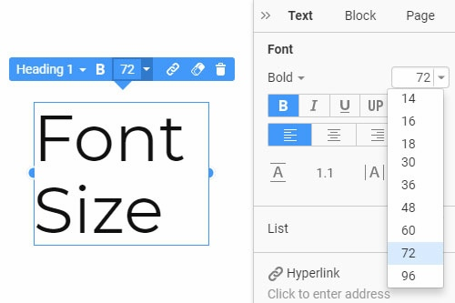

La accesibilidad web consiste en lograr que las páginas web puedan usarse por la mayor cantidad
de personas posibles, sin importar el nivel de sus conocimientos o habilidades personales ni
las características técnicas del dispositivo usado para navegar en la Web (Luján-Mora, 2024a).
En la actualidad, las personas con dificultades motrices, sensoriales o cognitivas tienen mayor
dependencia de los avances en accesibilidad web para mantenerse al día con el progreso
educativo, económico y social (Iberdrola, 2024).
Accesibilidad Web en la Era Digital.
Importancia de la Accesibilidad Web
La importancia radica en romper barreras y lograr que incluso personas con discapacidad
pueden acceder al contenido de los sitios web, garantizando la igualdad de oportunidades.
Además, tiene varias ventajas, ya que ayuda al crecimiento de una empresa o negocio y
mejora y facilita la navegación por internet (UserWay, 2023).
Accesibilidad Web para personas con discapacidad.
Principios de Accesibilidad Web
Según Luján-Mora (2024b), existen 4 principios fundamentales que un sitio web
debe tener para ser Accesible:
Perceptible
El contenido y los elementos de la interfaz de usuario deben mostrarse
de tal forma que todos los usuarios lo entiendan.
Por ejemplo: usar un lenguaje simple y caracteres grandes.

Tamaño de letra.
Operable
Se refiere a que los componentes de la interfaz de usuario del sitio web
y su navegación sean manejables. Por ejemplo: darles a los usuarios el
tiempo suficiente para poder navegar y usar el contenido con tranquilidad.
Tiempo de navegación.
Comprensible
Indica que el contenido y las acciones que pueden realizar los usuarios
que usan el sitio web puedan captarse fácilmente.
Por ejemplo: hacer que el texto de una página web se lea y se entienda a simple vista.
Legibilidad de un texto.
Robusto
Señala que el contenido debe tener un buen nivel de seguridad y estar bien desarrollado
para poder ser interpretado por los usuarios, involucra también usar tecnologías de apoyo
para personas con discapacidad. Ejemplo: usar lectores de pantalla para las personas
ciegas (Mozota, 2023).